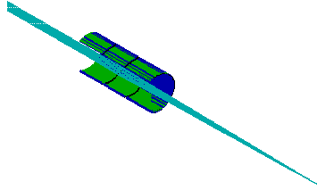
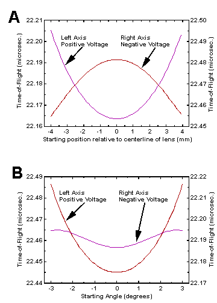
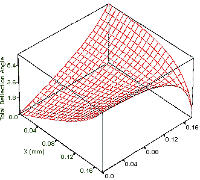
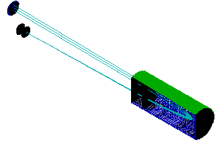

|
47 |
[ Part 1 | Part 2 ]
INTRODUCTION
This poster examines the use of SIMION 3D v.6.0 in time-of-flight mass spectrometry. SIMION is a ion optics software program originally developed by David Dahl at the Idaho National Laboratory.1 The latest version allows for greatly expanded simulation capabilities. These include larger array size (10 million points) and three dimensional modeling. Dynamic parameter variation and time varying potentials are now also possible.
We use two examples to show how the software can be used to analyze and solve problems in time-of-flight mass spectrometry. These involve the proper use of Einzel lenses and the effects of non-ideal grids. The simulation of Einzel lenses examines the effects of lens polarity on the time-of-flight distribution of the ions. Our examination of non-ideal grids illustrates the deflection of ions and quantifies the effects of different grid types.
Effects Of Einzel Lenses In Time-of-Flight Mass Spectrometry
Einzel lenses are a common tool in TOFMS. They are often used to focus ions to the detector and thereby improve sensitivity. The need for focusing increases with the length of the instrument and the fraction of kinetic energy perpendicular to the path toward the detector. A typical Einzel lens is shown in Figure 1. It consists of three electrode elements. The outer two are held at the same potential, typically ground, while the center is held at a potential appropriate for the desired focusing. It is possible to focus both positive and negative ions with either positive or negative potentials on the center electrode. However, the choice of polarity can markedly affect the time-of-flight distribution of the ions at the focal point.

Simulation
We have used SIMION 3D to model the Einzel lens shown in Figure 1. (A section is cut away to show the passage of ions.) The optic was 36mm long with an inner diameter of 14.2mm. Two focusing scenarios were examined. The first involved ions originating along a line 80 mm from the lens and focused to a point 300 mm from their source. (Figure 1). The second looked at ions coming from a point and focused within an 18 mm diameter target. Distances were the same in both cases. Ions were always considered to be positive and to have 200 eV of energy. SIMION's potential adjustment was used to optimize focusing voltages. It was a simple matter to identify both the positive and negative optimal focusing values for each scenario. It should be noted that complicated optimization routines may be developed using SIMION's user programming interface. This tool may be used, for instance, to choose the best grid voltages in a TOF reflectron.
Results and Conclusions
Figure 2A summarizes the results obtained when ions started from a line perpendicular to their flight. Optimal focusing potentials were found at +40.0 and -62.0 V. As seen in the figure the flight times calculated using either voltage range over a number of nanoseconds. These ranges were 26.7 and 41.6 ns for the negative and positive potentials respectively. The two parabolic shapes are due to the accelerating or decelerating effects of the center electrode. Those ions that pass closest to the electrode surface are most strongly affected.

The results obtained when ions originated from a point are shown in Figure 2B. The data were generated using the optimum potentials of +38.0 and -65.3V. The difference in flight time ranges was even more pronounced. These were calculated to be 41.4 and 8.1 ns, respectively. These values clearly show the importance of selecting the correct voltage polarity.
The results presented above demonstrate the advantage of using SIMION to examine ion optics in TOFMS. The results shown apply to a specific geometry, but one can make the general conclusion that it is preferable to use a potential whose polarity is opposite to that of the ions being focused.
Simulation Of the Effects Of In-Homogeneous Grids
Fine mesh or grids are commonly used to establish and divide acceleration regions in TOFMS. When different electric fields are placed on each side of a grid, a small electrostatic lens is produced at each opening. The effects of these lenses on the ion throughput and time resolution of instruments has been a point of controversy. Two published papers have indicated that the grids have little or no impact on the performance of the instrument2,3. Others suggest that grids can have a considerable effect and in some cases may even be the limiting factor in instrument resolution4-6. We have used SIMION 3D v.6.0 to simulate the flight of ions through individual grid holes. This work is the continuation of a study by one of us (Colby) that was first attempted with SIMION v.1.2 in 1986.
The grid material most commonly used is produced by Buckbee Meers of St. Paul, MN. Their products include a wide variety of wire densities and transmissions. The most popular meshes have wire densities of 70, 117.6, 333, and 1000 lines per inch. These have optical transmission of 90.0, 88.6, 70.0, and 50 percent respectively.
Simulation Conditions
Our SIMION 3D simulation is illustrated in Figure 3. It included nine grid holes and the volume within a distance of 1.5 grid holes on either side of the grid. At that distance the electric field was assumed to be uniform and a pair of solid electrodes were used to establish the fields in either direction. (One of these electrodes has been removed in Figure 3 to view the grid more clearly.) After refining (SIMION's method of calculating the potentials of non-electrode points), the potentials of points on the boundary and those in the interior that should be the identical due to the symmetry of the grid surface were compared. This established that the number of grid openings in the simulation provided sufficient accuracy. We also moved the solid electrodes by small distances to establish that the volume of the simulation was satisfactory. The potentials at over 20 million grid points were used to calculate ion trajectories This was accomplished be specifying 5.1 million points and then employing two axis of symmetry. The grid and one electrode were held at ground while the other electrode was held at high potential in order to establish an electric field.
Ion Trajectories
Ions were flown under a variety of conditions. This included 70, 117.6, and 333 line per inch grids as well as electric fields of 2000 and 10,000 V/cm. Ions were also flown in both directions; e.g. from high field to field free region and visa versa. When ions originated in the field free region, they were assumed to start with 200 eV of energy. When flown in the opposite direction ions were assumed to have been accelerated through 1.0 cm to either 2000 or 10,000 eV of energy when they reach the grid. All trajectories started along the Z axis perpendicular to the surface of the grid.
Results
The profile of angular deflections due to passage through a grid opening is shown Figure 4. The X and Y axis are in distances relative to the center of the grid opening. This shape is typical of the results obtained. The area plotted represents one quadrant of the grid hole opening. In other quadrants the X and Y components of the deflection angle will have differing signs. The data displayed are for an ion traveling from a field free region into a 10,000V/cm field. The angle is measured relative to the Z axis at distance of only 0.55 mm after the grid. At this point an average of 6.3% of the total velocity is perpendicular to the original direction of flight (along the Z axis). If the region was only 0.55 mm long this would be the angle at which the ion reaches the next region. However, if the ion is accelerated further, i.e. from the current 744 eV to 10.2 KeV (1 cm travel) the deflection angle will be reduced dramatically because all of the additional velocity is in the Z direction. After this acceleration the average (absolute) deflection angle will be reduced from 3.62 to 0.99 degrees.

When the ions travel from a region of high electric field to a field
free region the deflection angle can be measured a short distance from
the grid since no further acceleration takes place. If we assume that all
ions start at rest and accelerate through the same distance before encountering
the grid then the results are independent of the acceleration field. The
difference in ion velocity are therefore compensated for by changes in
the electrostatic lens. Calculated results for a number of standard grid
sizes are shown in Table 1. These results are independent of ion
mass. The values for average deflection angle refer to the average absolute
value in a given quadrant. For each deflection angle one of opposite sign
is found in the opposite quadrant so the total average is zero.
Table 1: Deflection angles
Starting Region |
Grid Size |
Field Strength |
Deflection Angle.*,a |
Perpendicular Velocity *,a |
Deflection Angle.*,b |
Perpendicular Velocity*,b |
| Field Free | 70 (lines/inch) | 2000 (V/cm) | 2.33 (deg.) | 4.0 (%) | 0.91 (deg.) | 1.6 (%) |
| 117.6 | 2000 | 1.12 | 2.0 | 0.40 | 0.70 | |
| 333 | 2000 | 0.351 | 0.61 | 0.11 | 0.20 | |
| 70 | 10,000 | 3.62 | 6.3 | 0.99 | 1.7 | |
| 117.6 | 10,000 | 2.67 | 4.6 | 0.61 | 1.1 | |
| 333 | 10,000 | 2.58 | 4.5 | 0.45 | 0.80 | |
| High Field | 70 | any | 0.153 | 0.27 | 0.153 | 0.27 |
| 117.6 | any | 0.091 | 0.16 | 0.091 | 0.16 | |
| 333 | any | 0.033 | 0.058 | 0.033 | 0.058 |
*Average Values
aAt 1.5 times grid wire spacing.
bAfter 1.0 cm.
Ramifications In Real Instruments
The angles listed in Table 1 are quite small, but we must consider their impact on real time-of-flight instruments. Consider a linear TOFMS with a single acceleration stage followed by a drift region and detector. In this example, with the worst case (0.153 degrees), an 18mm detector would have to be 3.3 meters from the source before 50% of the ions would be lost. So grid lensing does not appear to be a major problem for sensitivity although the change in time-of-flight is roughly proportional to the percent of perpendicular velocity (1.7%). A second example is shown in Figure 5. This reflectron includes a source, a two stage reflector, a detector, and two field free drift regions. The total length is 300 mm. Ninety percent of an ion's energy is removed in the first stage of the reflector. We observe the effects of ion lensing by simulating the trajectories of ions from the source to the detector. The figure shows three trajectories. One represents a non-deflected ion while the others indicate ion given angles of plus and minus 0.153 degrees at the exit of the source. Clearly ion scattering now has serious consequences for the performance of the instrument. With 70 lines per inch grids, the average ion falls 4 mm from the center of the ion beam. In addition, the flight time difference between the three ions is 25 ns! The difference between these two examples is that the reflectron has regions of deceleration. In these areas the velocity component due to deflection is unaffected so it becomes a greater fraction of the overall velocity. In the reflector this can quickly become the dominant component of velocity. For example, if the drift energy of undeflected 1000 amu ions is 2000 eV then the average ion will have velocity components of 52 and 19640 m/s after leaving the source. In the second stage of the reflector, the velocity along the long axis of the instrument is reduced from 19640 m/s to zero. During this time the 52 m/s velocity component perpendicular to the ion beam stays constant and has a considerable effect on the time of flight and the final position of the ion at the detector.

Conclusions
SIMION 3D has been a useful tool for analyzing the problems of grid in-homogeneity in TOFMS. We have found that grids can indeed have a significant impact on the performance of time-of-flight instruments. This is particularly the case when ions experience decelerations as in a reflectron. Small deflection angles that are introduced when the ion is at high energy can have significant effects if the energy is reduced. Our results agree with the work of those who considered grids to be a considerable problem. The work of King, et al. Is perhaps the most thorough since they followed calculations with instrumental verification.
Future Work
The above simulations only consider the ramifications of a single grid. The cumulative effects of several deflections require a more sophisticated analysis. We are currently working on a SIMION 3D macro, using SIMION's user programming interface, that will allow the Monte Carlo simulation of ions passing through a series of grids.
References
[ Part 1 | Part 2 ]